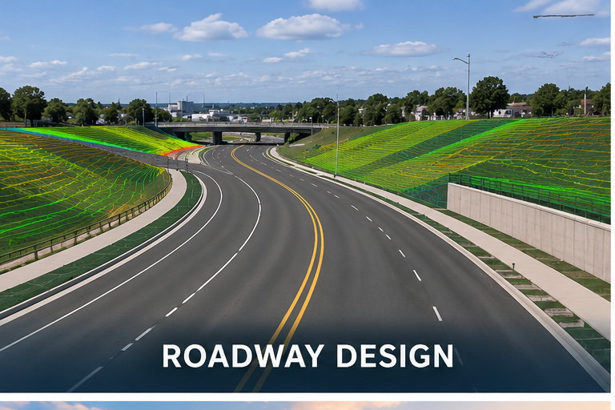
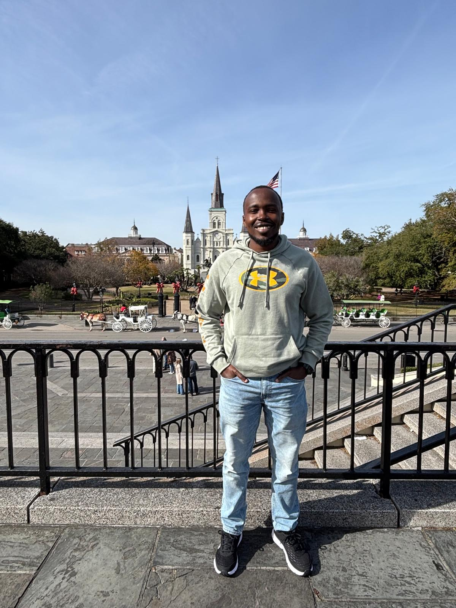
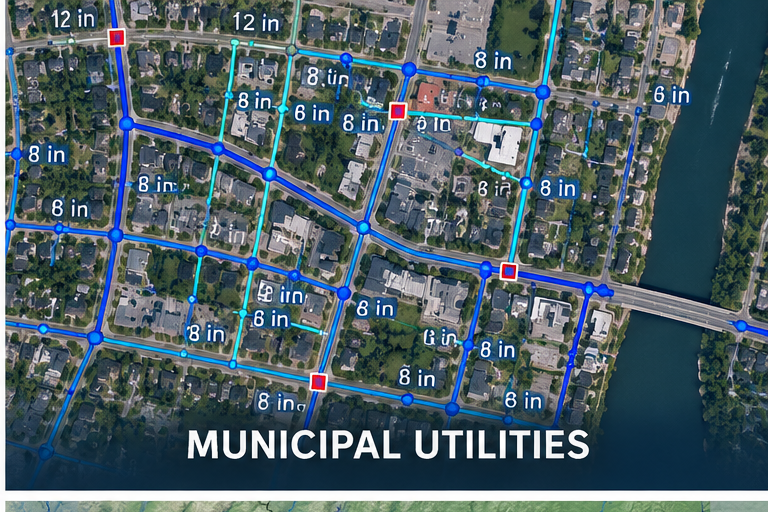
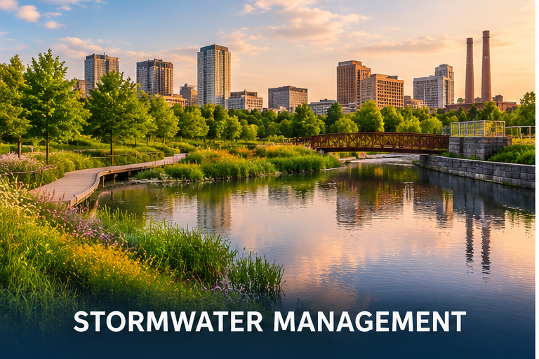
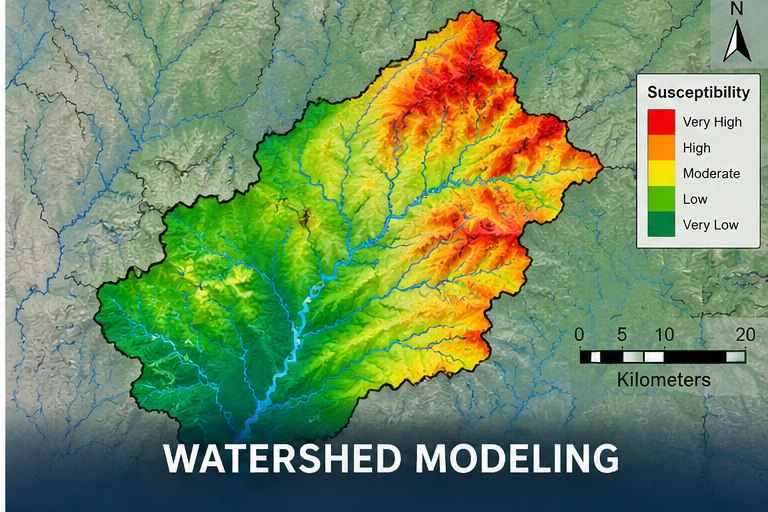

Transportation | In Progress
Road Reconstruction Design
Terrain modeling, roadway alignments, profiles, and corridor development using Civil 3D.
Infrastructure Design | Transportation | Water Resources
Exploring practical engineering solutions through infrastructure design, technical analysis, and computational modeling.
Explore My Work
A selection of design, modeling, and research projects demonstrating my approach to civil engineering.

Terrain modeling, roadway alignments, profiles, and corridor development using Civil 3D.

Preliminary water distribution and sanitary sewer design for a 556-acre urban service area in Maine.

Watershed delineation, runoff analysis, and evaluation of urban stormwater infrastructure in Birmingham, Alabama.

GIS-AHP susceptibility assessment, SWAT+ simulations, and targeted best management practice evaluation.
I am a civil engineering graduate student at the University of Alabama at Birmingham, with interests spanning transportation, municipal infrastructure, water resources, and engineering research.
My work combines engineering principles, computational tools, and practical problem-solving to investigate and develop infrastructure solutions.